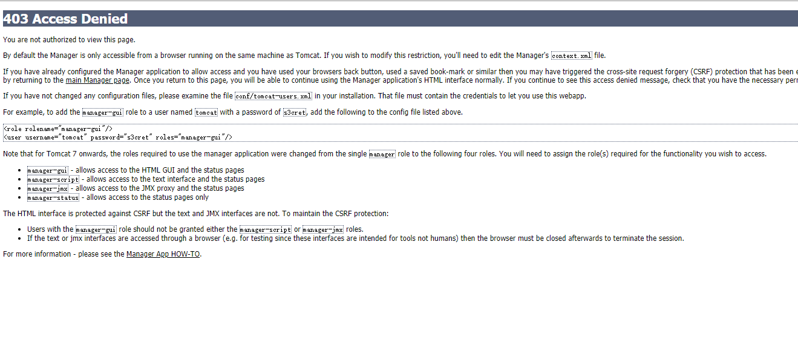
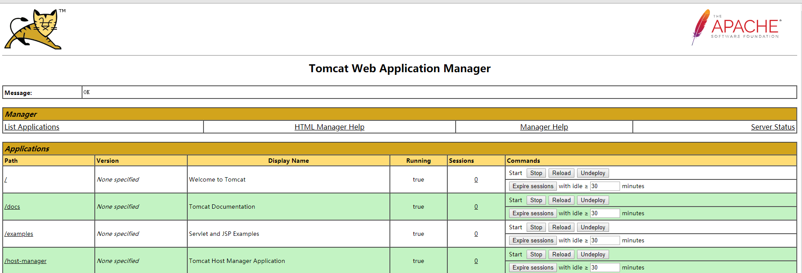

1.1.1. tomcat管理页面403解决方案
安装tomcat之后，访问server status、manager app、host manager等页面，出现403 Access Denied错误

解决方法:
- 1.在conf/tomcat-users.xml文件里面，在</tomcat-users>前面添加如下代码：
<role rolename="role1"/>
<role rolename="manager"/>
<role rolename="manager-gui"/>
<role rolename="manager-script"/>
<role rolename="manager-jmx"/>
<role rolename="manager-status"/>
<role rolename="admin-gui"/>
<role rolename="admin-script"/>
<user username="tomcat" password="tomcat" roles="tomcat"/>
<user username="both" password="tomcat" roles="tomcat,role1"/>
<user username="sa" password="admin" roles="tomcat,role1,manager,manager-gui,manager-script,manager-jmx,manager-status,admin-gui,admin-script"/>
<user username="role1" password="tomcat" roles="role1"/>
<user username="tomcat" password="s3cret" roles="manager-gui"/>
然后重启tomcat，重新访问manager app页面，如果此时仍然出现403 Access Denied错误，那么就是访问的ip地受到了限制
- 我们打开webapps/manager/META-INF/目录下context.xml文件，不是conf/目录下的context.xml文件我们将里面的内容注释掉或者修改为:
<Valve className="org.apache.catalina.valves.RemoteAddrValve"
allow="192\.168\.234\.\d+|127\.\d+\.\d+\.\d+|::1|0:0:0:0:0:0:0:1" />
- 成功进入如下界面
